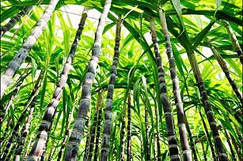
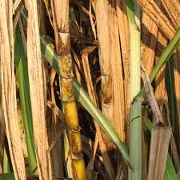
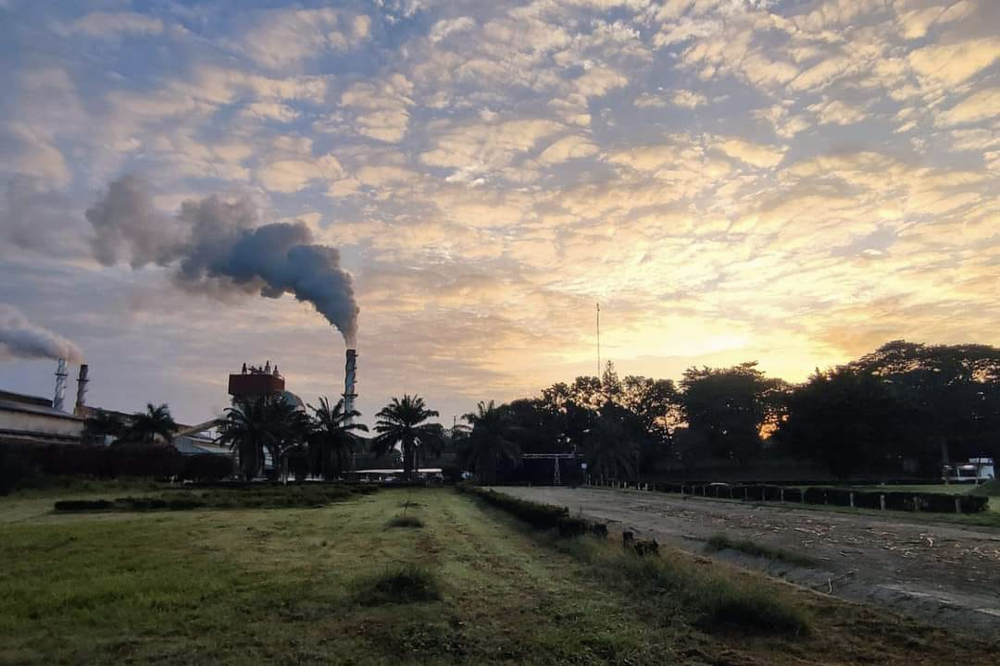
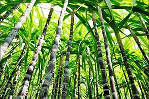
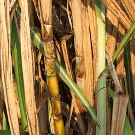
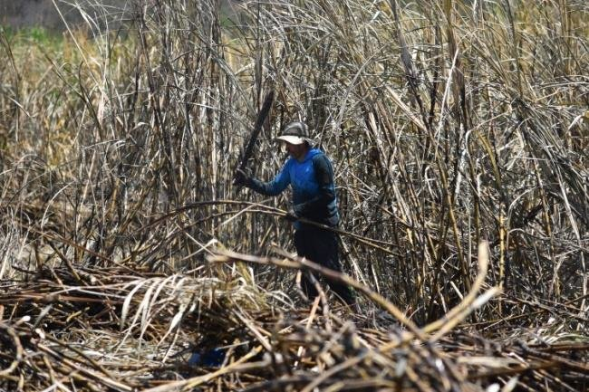
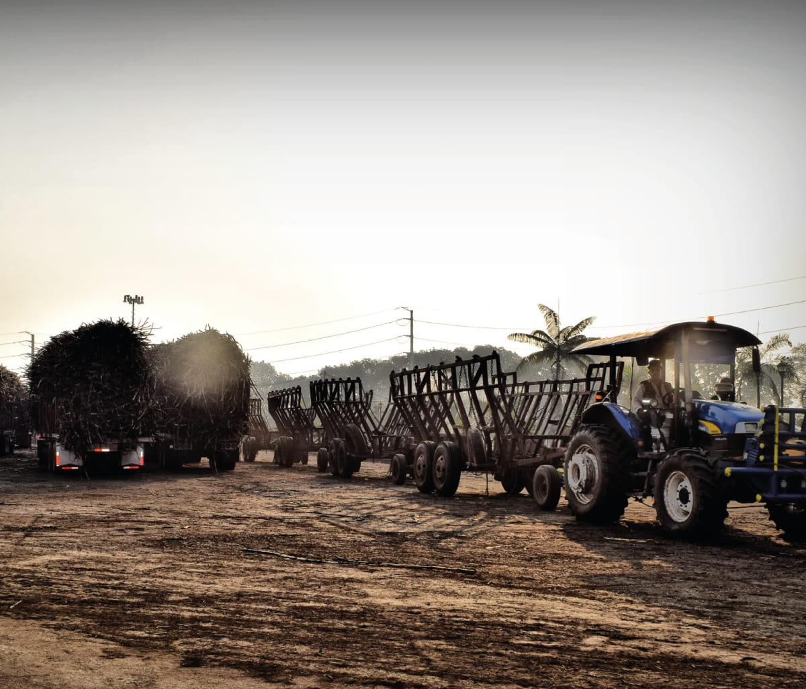
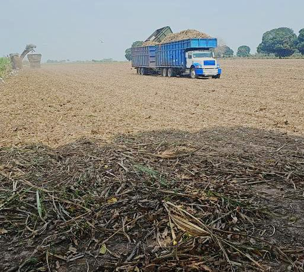

Variedades de Caña
CP 72-2086
Alta productividad y resistencia.
MEX 69-290
Adaptada a climas húmedos.
LCP 85-384
Buena calidad de jugo.

Historia, Variedades, Cultivo, Cosecha y Producción
La caña de azúcar llegó a la Cuenca del Papaloapan durante la época colonial. Su cultivo se desarrolló rápidamente gracias al clima cálido y húmedo, convirtiéndose en uno de los pilares económicos de la región.
Alta productividad y resistencia.
Adaptada a climas húmedos.
Buena calidad de jugo.
Preparación del suelo: Se realiza en el mes de mayo, con el fin de preparar el suelo para la siembra.
Siembra: Se realiza en el mes de junio, utilizando semillas de caña de azúcar seleccionadas.
Riego: Se realiza durante todo el ciclo de cultivo, utilizando agua de la Cuenca del Papaloapan.
Fertilización: Se realiza en el mes de julio, utilizando fertilizantes químicos y orgánicos.
Control de plagas y enfermedades: Se realiza durante todo el ciclo de cultivo, utilizando productos químicos y biológicos.
Cosecha: Se realiza en el mes de diciembre, utilizando máquinas cosechadoras.
El cultivo de la caña de azúcar en la Cuenca del Papaloapan es un proceso que requiere una gran cantidad de mano de obra y recursos, pero que también puede generar importantes beneficios económicos y sociales para la región.
La caña de azúcar se cosecha de dos formas principales: manualmente o mecánicamente. En ambos casos, la caña puede ser quemada o cruda.
En la cosecha manual, se quema la plantación para eliminar malezas y plagas. Una vez cortada, la caña se apila en el campo y se recoge a mano o con maquinaria para transportarla al ingenio.
 La cosecha mecánica utiliza una cosechadora o cosechadora de caña de azúcar. La máquina corta la caña en la base del tallo, pela las hojas, corta la caña en trozos consistentes y la deposita en un transportador que la sigue al costado. La cosechadora luego sopla la basura de regreso al campo.
La Cuenca del Papaloapan es una región ideal para el cultivo de la caña de azúcar debido a su clima y recursos hídricos.
Producción: La región produce alrededor de 2 millones de toneladas de caña de azúcar anuales.
El Ingenio Central de El Potrero, ubicado en Veracruz, es el que produce más toneladas de caña de azúcar en el estado.
Todos los ingenios del país participan para producir y satisfacer la demanda de azúcar a nivel nacional e internacional. En México, Veracruz es el estado líder en producción de caña de azúcar, seguido por San Luis Potosí y Jalisco.
Trabajo realizado por:
Itzel Gabriela Lopez Burela y Marvin Martinez Vidal